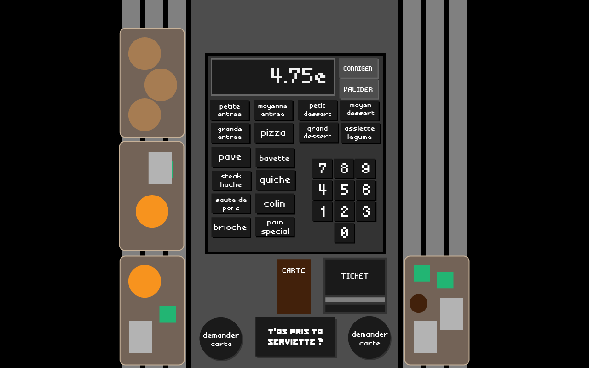

Déroulement d'un plateau
- On commence à noter avec le clavier les aliments dans un des deux plateaux devant nous
- Seul le prix total s'affiche sur la caisse.
- La carte permet de voir la liste des aliments avec une photo et le prix
- En cas d'erreur il faut cliquer sur "Corriger" puis l'aliment à enlever pour annuler. Seulement un par un
- Une fois le plateau bien entré, on clique sur Valider, et on demande la carte à l'un des deux plateaux (le bon !)
- Ensuite on tape le numéro de carte avec le numpad
- On peut effacer avec le bouton "Corriger" et on valide avec "Valider"
- Une fois validé, le ticket de caisse s'imprime et on peut rendre la carte et le ticket au plateau (le bon)
- Une fois le ticket rendu, la transaction est terminé, la file avance et on repart au début
- Il faut impérativement appuyer sur le bouton TAPTS pendant la transaction, à n'importe quel moment et une seule fois